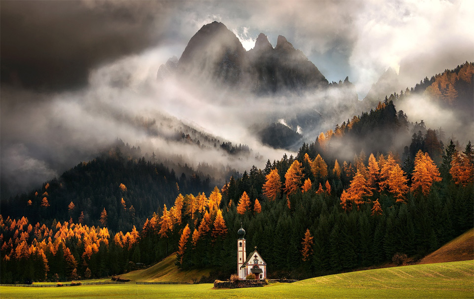
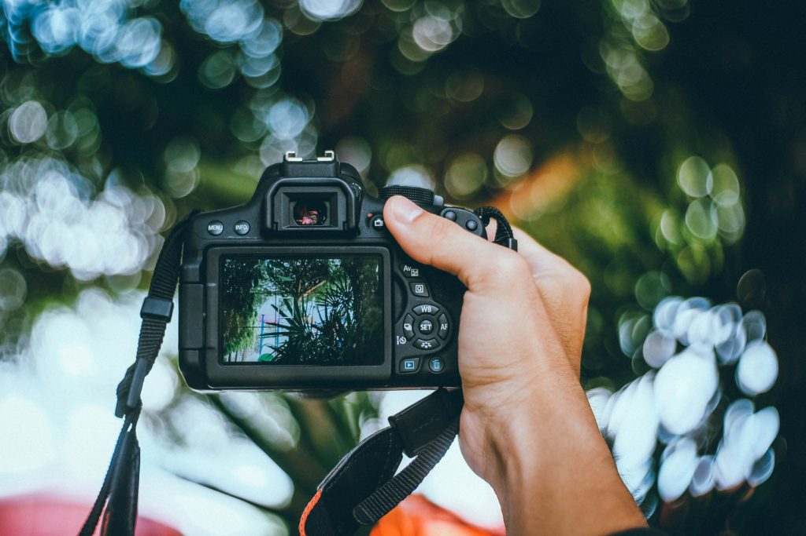
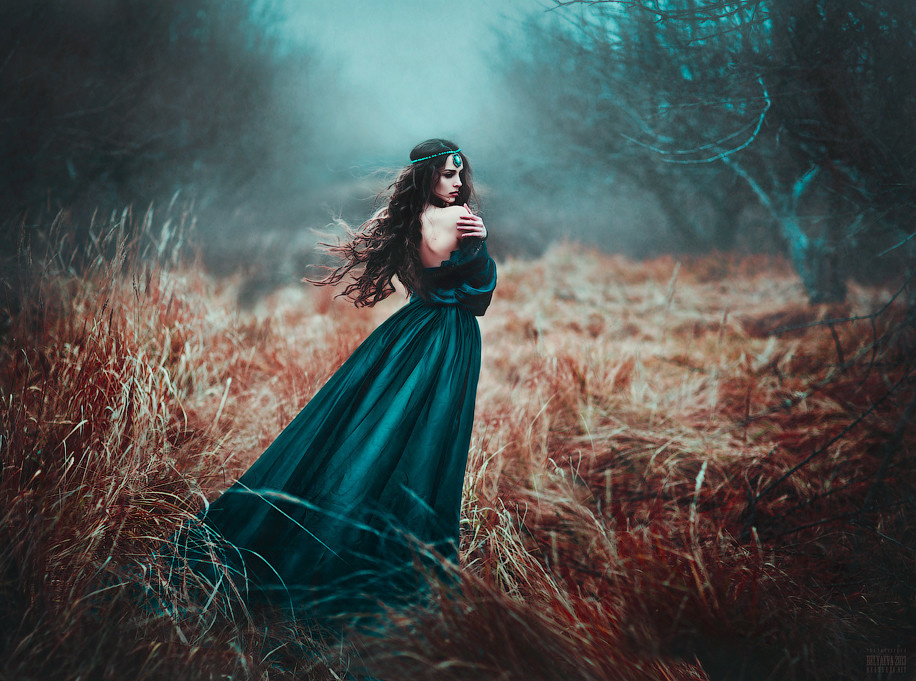
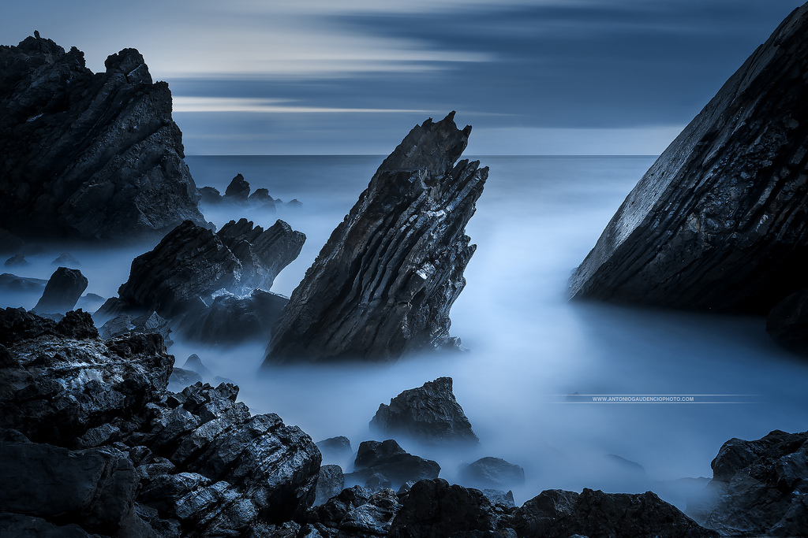

| |
Fotografiando Paisajes: Consejos

-
Hay vida más allá de los paisajes de naturaleza. Los paisajes urbanos también pueden ser muy interesantes.
-
No necesitamos paisajes especialmente espectaculares, la composición lo es todo.
-
La paciencia es muy importante.
-
Cualquier variación de luz puede suponer un cambio radical de la fotografía.
-
Para la fotografía de paisaje, los trípodes son realmente útiles.
-
Las horas centrales del día son el peor momento para fotografiar paisaje.
-
Incluir personas o primeros planos de algún elemento en fotografias de paisaje puede ser muy interesante
-
En la fotografía urbana, el bokeh puede ser muy interesante
-
Las líneas en forma de “S” dentro del paisaje resultan muy atractivas.
-
Utiliza los marcos naturales para encuadrar el centro de interés.
-
Recuerda la ley del horizonte, salvo que quieras saltártela por algún motivo concreto. Evita poner el horizonte en el centro, deja dos tercios de la imagen para la zona que más desees destacar.
-
Lo normal será que captures paisajes utilizando mucha profundidad de campo para que toda la escena esté en foco, pero no olvides experimentar también con profundidades de campo pequeñas. Te llevarás sorpresas.
Prueba diferentes ángulos hasta dar con el que más te satisfaga. El encuadre horizontal transmite tranquilidad y es el más utilizado.
7 Reglas Básicas Para Una Fotografía Correcta

-
La Regla de los Tercios:
Esta regla es muy simple pero tiene un tremendo poder en la forma en que visualizamos la foto. Consiste en dividir la imagen, mentalmente, en 9 partes iguales (mediante 2 líneas paralelas horizontales y otras 2 verticales) y a continuación colocar el sujeto en algún punto de intersección de las líneas.
-
Explorar nuevos ángulos
Experimenta la fotografía disparando con tu cámara desde ángulos atrevidos y poco usuales. Por ejemplo hazte una foto a ti mismo en el retrovisor del coche (sólo cuando no seas tú el conductor, por favor) o captura la imagen de algún edificio histórico reflejada en un charco de agua.
-
Acércate sin miedo a los sujetos
Utiliza la función Macro de tu cámara (en modo automático la puedes identificar con un símbolo de flor, y en cámaras réflex utilizando un objetivo Macro) y haz fotos de muy cerca a objetos pequeños. Captura detalles. Incluso podrías enfocarte exclusivamente en el detalle obviando el resto del objeto. Los resultados suelen ser muy llamativos.
-
Adopta la altura de tus sujetos pequeños de edad
Para lograr magníficas fotos de niños, ponte de cuclillas o de rodillas, intenta bajar y colocar la cámara a la misma altura que la del niño o animal que quieras fotografiar, así transmitirás más realismo.
-
Utiliza el flash en el exterior
Para retratos, utiliza el flash en el exterior. Aunque haga un día especialmente soleado, el flash ayuda a prevenir las zonas de sombra que ocupan la cara de la persona por llevar por ejemplo gorro o algo que proyecte sombra o porque el sol esté encima o detrás de la persona fotografiada. Lo mejor para evitarlo en forzar el flash. Se llama flash de relleno, y su finalidad no es iluminar la oscuridad, sino rellenar la cara del sujeto de luz para que ésta resulte uniforme con lo que la rodea.
-
Disparar siempre en RAW
Haz todas tus fotos en RAW. Este formato preserva todos los elementos de la foto (colores, luz, sombras, saturación) y permite, mediante un procesamiento posterior, moverlos a nuestro antojo. Realizar una foto en JPG produce una foto final en la que no tendríamos más margen de modificación.
Consejos: Retratos

-
Conectar con el/los retratados
-
Empatía y buen ambiente durante la sesión
-
Explicarse bien. Es importante aprender a dirigir a los modelos
-
Empieza practicando con alguien de confianza, que tenga mucha paciencia
-
Enfocar a los ojos, es, probablemente, el apartado más importante
-
Busca reflejo en los ojos para dotar a estos de vida y potenciar la mirada
-
¿Recuerdas la regla de los tercios? Pues procura que los ojos se sitúen en uno de los puntos fuertes de la imagen.
-
Aplica la ley de la mirada dejando espacio en el encuadre por delante de la misma
-
Una mirada directa a cámara crea conexión con la persona que mira la fotografía.
La mirada fuera del encuadre crea curiosidad en el espectador y potencia la narrativa.
-
No te olvides de encuadrar también en vertical, este formato te permite centrar mejor la atención en tu protagonista y te da muchas oportunidades compositivas.
-
Una luz frontal resalta los detalles del rostro y reduce las texturas. La lateral resalta las texturas y aumenta el volumen.Una luz cenital crea sombras marcadas bajo ojos, nariz y mentón. La nadir o contrapicada crea sombras bastante antinaturales en el rostro. Luz trasera para jugar con contraluces, contrastes o siluetas. Juega con la luz difusa para transmitir belleza, ternura o delicadeza.
-
Hazte una carpeta inspiracional con las fotos que veas por allí que te gusten, para poder consultarla en momentos de necesidad o por simple placer.
-
Busca localizaciones interesantes a las que ir cuando quieras hacer una sesión de retrato. Hazles fotos y anota el lugar preciso y la mejor hora para ir.
- Elige bien la óptica que vas a utilizar: las ópticas recomendadas para retratos suelen ser las de distancia focal media-larga.
Claves para fotografiar agua en movimiento
Una de las fotografías que más me atraía desde pequeño era el de los saltos de agua con ese efecto que hacía que el agua que arrastraba la corriente pareciera una gasa de color blanco. Con el tiempo descubrí la manera, tan sencilla como impactante, de realizar este tipo de fotografías. ¿Quieres saber cómo conseguirlo? Es más fácil de lo que puedas creer.
La explicación técnica de este tipo de fotografías es muy básica. Se resume en velocidad de obturación. El agua pasa ante nuestros ojos con una velocidad endiablada. Si conseguimos registrar la imagen de forma más lenta que el agua que pasa delante nuestro, conseguiremos aplicar este efecto con éxito.
Para ello necesitaremos, por un lado, que nuestra cámara cumpla con una serie de requisitos, y por otro, realizar una serie de ajustes a la hora de hacer la foto.
- Control Manual sobre los Parámetros de la Cámara
Y es que para este tipo de fotos no sirve cualquier cámara. Da lo mismo que se trate de una cámara réflex, una sin espejo o incluso una compacta. No importa en absoluto el tamaño, pero es necesario que disponga de controles manuales que nos permitan ajustar la velocidad de obturación y la apertura del diafragma. Estos son los dos mecanismos básicos con los que controlamos la cantidad de luz que pasa a través del objetivo.
- El sitio
Esto puede parecer bastante obvio, pero no lo es. No hace falta buscar grandes cascadas o caídas de agua desde gran altura. Pero es fundamental que el agua corra con fuerza. Con la suficiente fuerza como para que haga algo de espuma, que no es otra cosa más que burbujas de oxígeno que se forman y liberan con el golpeo de unas gotas con otras. Esta espuma es lo que al final veremos como un halo blanco.
- Un trípode
Hemos dicho que queremos utilizar tiempos de exposición largos. Estos tiempos van a ser mucho más largos que los que nos permiten realizar una foto a pulso. Por ello, necesitaremos un trípode. Y esta vez no nos va a servir cualquiera.
Por motivos de seguridad deberemos mantener nuestra cámara lo más alejada posible del agua. La humedad es muy dañina, y puede hacer que nuestra cámara deje de funcionar en cualquier momento. Por eso, no solo hay que preocuparse de que nuestra cámara caiga al agua. También es importante que no entre humedad. Y para ello, cuanto más alejada de salpicaduras, mejor.
Por ello, será preferible utilizar un trípode alto a optar por uno de esos de bolsillo. No obstante, siempre que garanticemos la seguridad de nuestro instrumental eléctrico, cualquier trípode nos servirá.
- Velocidad obturación baja:
Esta es la clave. Si conseguimos una velocidad de obturación lo suficientemente baja, habremos logrado el objetivo perseguido. Pero no basta con poner una velocidad de obturación baja, ya que tendremos que ajustar el resto de valores para que la fotografía no salga quemada al forzar la velocidad de obturación.
- Apertura diafragma mínima
Seleccionando la menor apertura del diafragma (número f más alto) que nos permita nuestro objetivo estaremos consiguiendo dos cosas. La primera, una profundidad de campo lo mayor posible, algo recomendable en líneas generales en fotografía de paisajes, salvo que queramos utilizar la profundidad de campo como un elemento compositivo más.
La segunda y más importante es que nos permitirá contrarrestar la luz que entra a través de nuestra lente con velocidades de obturación lentas.
- Sensibilidad ISO baja
Cuanto más bajo sea el valor ISO seleccionado en nuestra cámara, más tiempo de exposición necesitará la cámara para hacer la foto en condiciones aceptables. No olvides comprobar la configuración de la sensibilidad ISO, porque pudiera ser que la hubieras subido en algún otro momento, haciendo que quede sobreexpuesta la imagen con velocidades de obturación lentas.
- Esperar a que no haya mucha luz
Cuanta menos luz haya en el sitio, mucho mejor. Mejor porque la cámara necesitará exponer durante más tiempo, y esto favorecerá nuestro propósito. Por lo tanto, puedes esperar a que el lugar quede a la sombra, o hacer las fotos al amanecer o al atardecer.
- Utilizar un Filtro de Densidad Neutra (Filtro ND)
Existe un tipo de filtros especiales, los filtros de densidad neutra, que limitan la cantidad de luz que pasa a través del objetivo, sin afectar al color o a la nitidez conseguida en la imagen.
Con el uso de filtros ND necesitaremos abrir más el diafragma o bajar la velocidad de obturación para hacer el mismo tipo de foto que haríamos sin el filtro en otras condiciones. No obstante, recalcar que no es en absoluto necesario el uso de este tipo de filtros para nuestro cometido. Simplemente, nos ayudará por limitar el paso de la luz.
- Controlar la exposición de la cámara
Uno de los fallos comunes que se produce en este tipo de fotos es que, dependiendo del tipo de medición de la luz que haga la cámara, podemos "quemar " la zona blanca del agua. Esto se produce normalmente cuando utilizamos una medición promediada con la cámara.
Una buena práctica, si nuestra cámara lo permite, es ajustar la configuración para subexponer un par de puntos. De este modo conseguiremos mantener el detalle de la zona de la espuma del agua sin que esta se convierta en una mera mancha blanca.
|
|